旅ことば：整體設計試作
四個完全不同的視覺方向，每個都做了「主畫面」和「字卡」，淺色、深色各一。內容都是 App 裡的真實資料（必備線前 12 站、「南」那張卡）。圖片可以左右滑；按「實際操作」可以點進去切換畫面、換下一張卡、切深淺色。最下面是現在的樣子，方便對照。
你問的程式庫與 skill
Motion：可以用，有不需要 React 的版本（約 20 KB）。四個方向的換卡動畫都是它：A 像列車進站、C 撕票、D 用手指甩卡片的彈簧。
shadergradient：它本身綁 React 和 Three.js，不能直接放進這個沒有建置步驟的 App。同樣「會流動的漸層」用 Paper Shaders 的原生版做（D 的天空），或自己寫一小段著色器（B 的暈染天空、現在的立體開場）。
kokonut ui：React＋Tailwind 的元件集，不能直接放；D 的便當格首頁和下一站那格會繞一圈的流光邊框，是照它的做法手寫的。
liquid-glass：用瀏覽器內建的毛玻璃（iPhone 原生支援），D 整套都是；需要先把整頁截圖再折射的 liquid-glass-js 在手機上會卡，不採用。
Skill：這次用 impeccable（這個 App 一開始的設計也是它做的），先抽籤決定主打方向，避免每次都做成同一種樣子。
A 站名牌抽籤指定的主打
字卡就是日本車站的站名牌：大字是單字、上面是假名、下面是中文（日本車站的牌子真的會寫中文），紅色帶子左右兩端寫著上一站、下一站，也就是上一個字、下一個字。首頁是一條真正的路線圖。
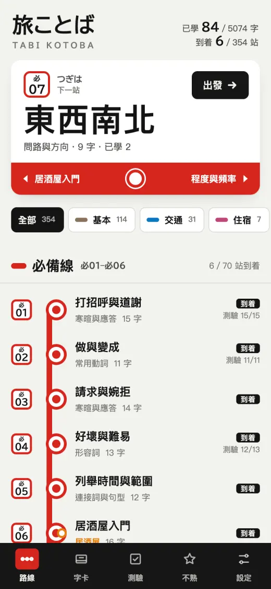
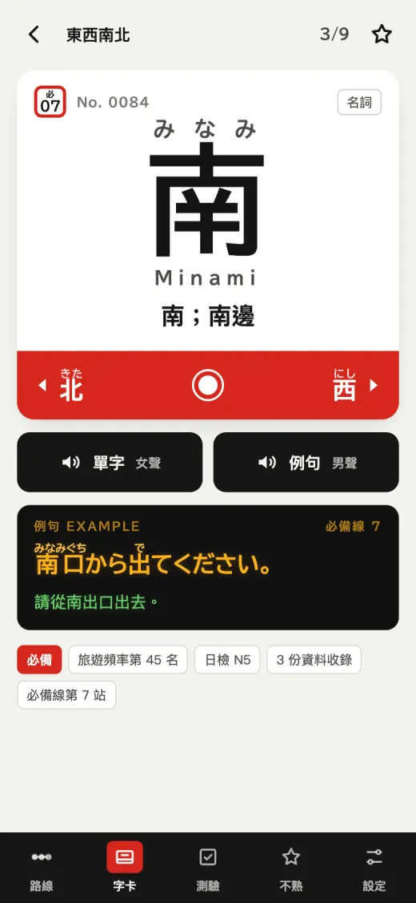
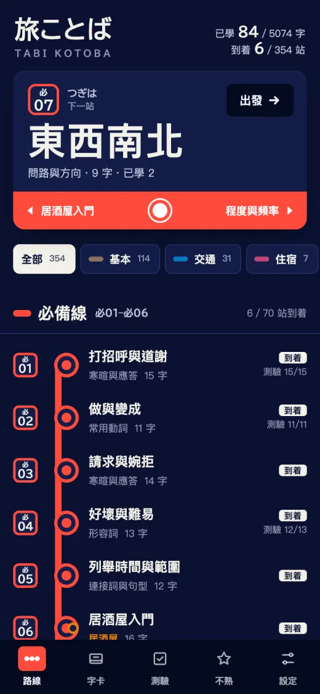
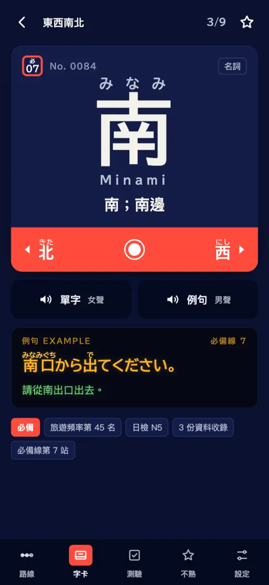
- 特色
- 東京地下鐵式的方框站號（必07）、「つぎは」下一站、跨主題的站畫成轉乘圓環、目前位置標「現在地」；例句放在黑底琥珀色的發車標裡；捲動時頂端顯示目前看到的是哪幾站。
- 深色
- 深藍琺瑯底（像地鐵站的琺瑯路線圖）。
- 動態
- 換字時站名牌像列車進站一樣滑進來，不回彈。
- 風險
- 很像你最早的第一版「車站站名牌風」，只是做得更完整；紅色用得多，整體比現在熱鬧。
- 上線要做
- BIZ UDPゴシック 字型要自己打包裁切（離線用），約 1–2 MB。
B 東海道五十三次impeccable 的首選
三條線是三條街道，一站一「宿」。整個 App 是一套廣重式的木版畫連作：天空是木版畫特有的「暈染」漸層，朱紅直書題籤寫站名，學完一宿蓋一個「着」字朱印。不畫任何插圖。
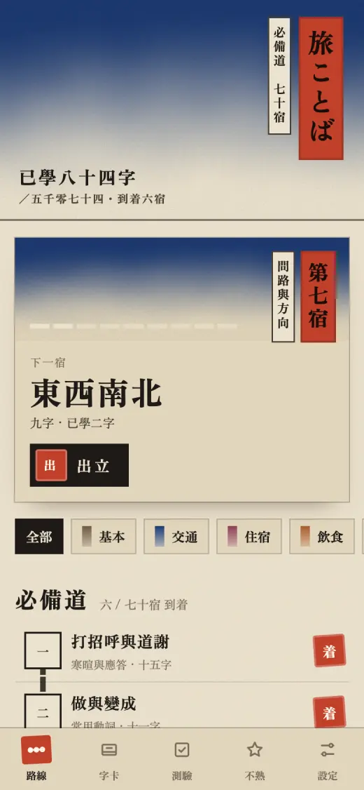
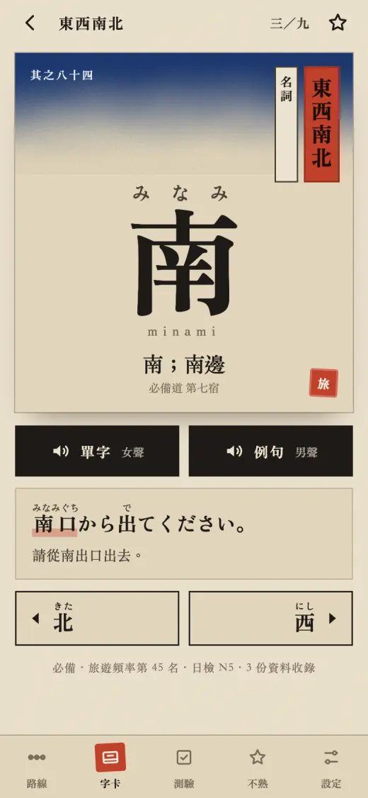
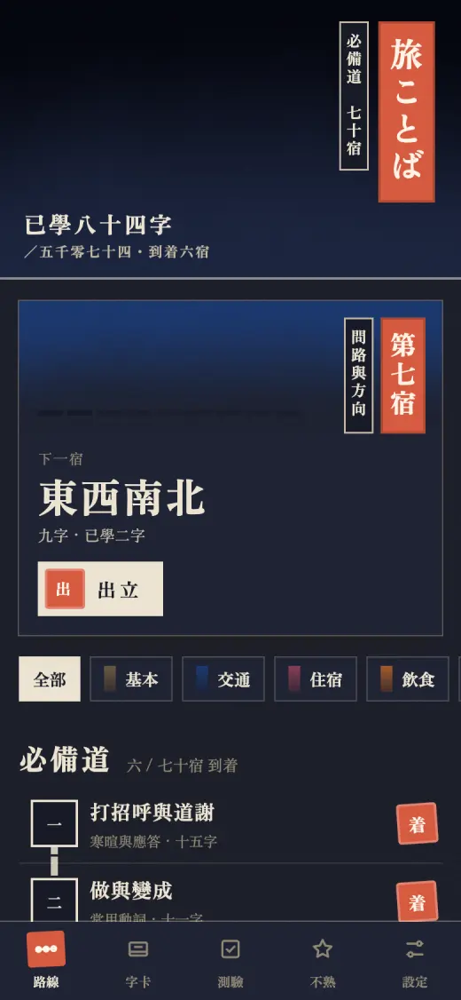
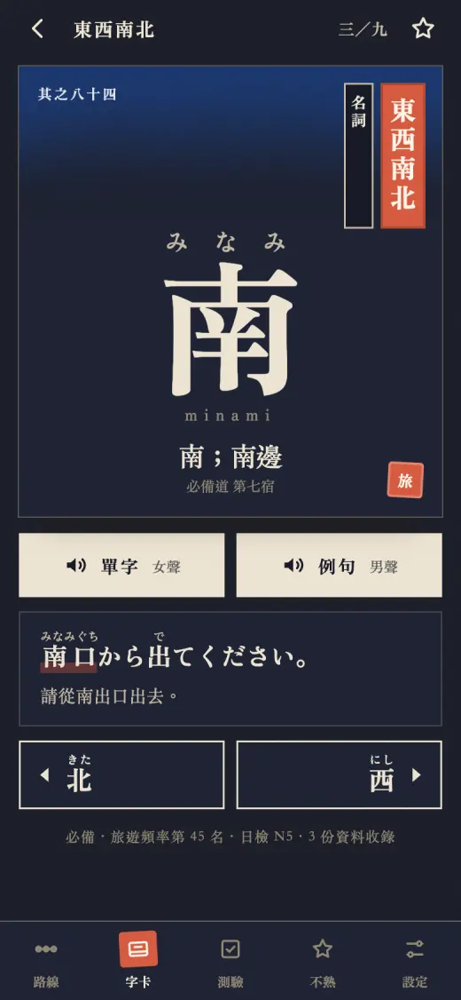
- 特色
- 暈染天空用一小段著色器做成很慢地流動（shadergradient 的效果，不用 React）；和紙纖維、漢數字的宿號（第七宿）、例句裡的單字用朱色底線標出。
- 深色
- 夜景版畫：藍黑色的天空、深藍紙。
- 動態
- 換字時版畫從模糊浮現；天空一直在極慢地流動。
- 風險
- 「和風」是很常見的日本意象，做得不好會像觀光紀念品；底色又回到米色系（你之前從米色改成米白）。
- 上線要做
- Zen Old Mincho 字型要打包裁切；天空的著色器要在畫面不動時暫停，避免耗電。
C 乘車券挑戰者：從「機票夾」改成日本車票
學習就是一張一張用掉的車票。總進度是一張「定期券」，下一站是一張乘車券（從哪站到哪站），按綠色箭頭「入場」開始學；學完的站蓋紅色「使用済」章、旁邊有剪票缺口。
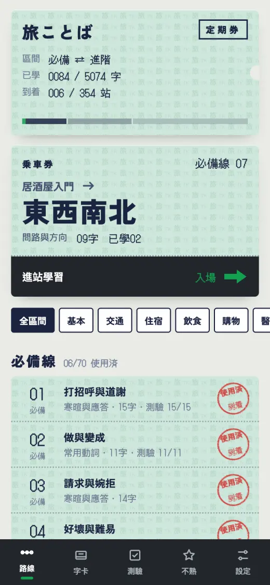
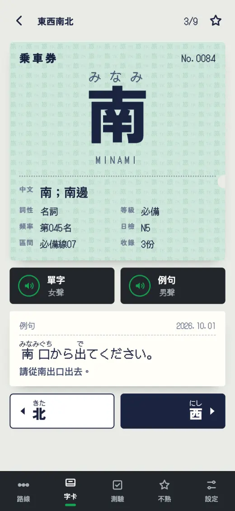
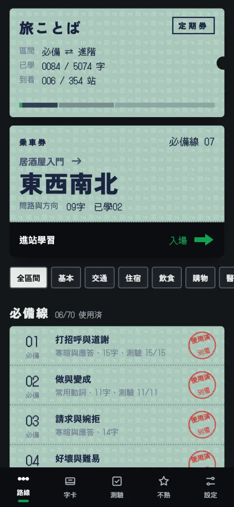
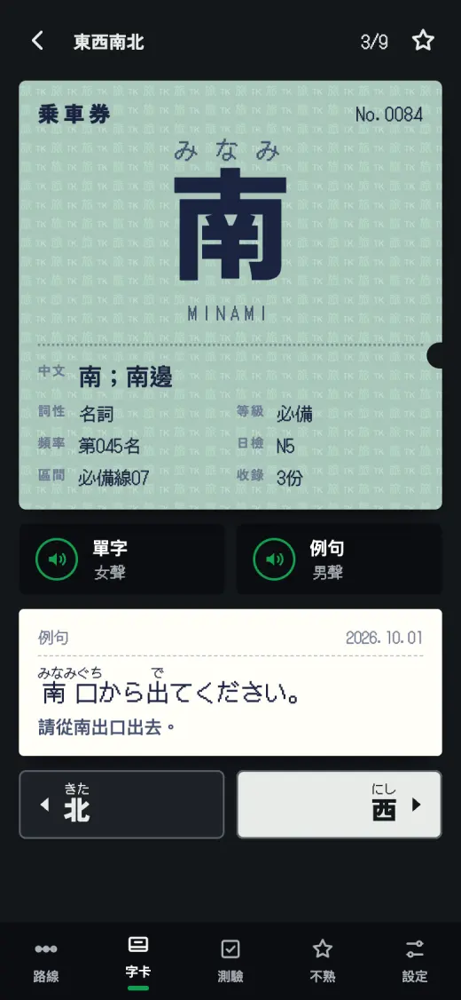
- 特色
- 淡青綠的防偽底紋（細字「旅」）、點陣印字機的數字（DotGothic16）、自動改札機的黑色機身與綠色箭頭；例句印在像收據的白紙上。
- 深色
- 夜晚的車站：票仍是淺色，背景變深。
- 動態
- 按下一張，舊票沿虛線撕掉往上飛，新票從下面推上來。
- 風險
- 資訊欄位多、畫面比較密；點陣字型讀久了會累，所以只用在數字和例句。
- 上線要做
- 兩種字型要打包；DotGothic16 只需要數字與假名，很小。
D 暮色玻璃你點名的程式庫
背景是日本一天的天色，用 Paper Shaders 的網格漸層慢慢流動；所有資訊浮在液態玻璃面板上，首頁是便當格，字卡可以用手指拖、放手時用 Motion 的彈簧甩出去或彈回來。
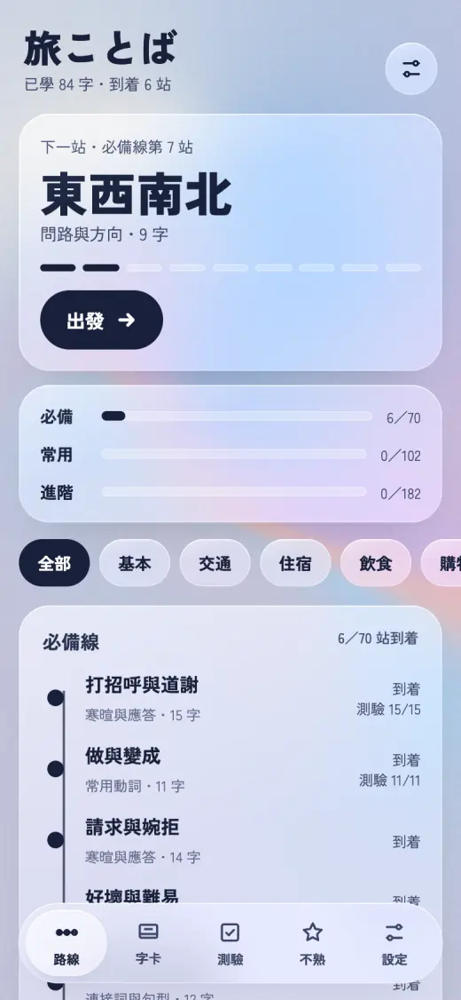
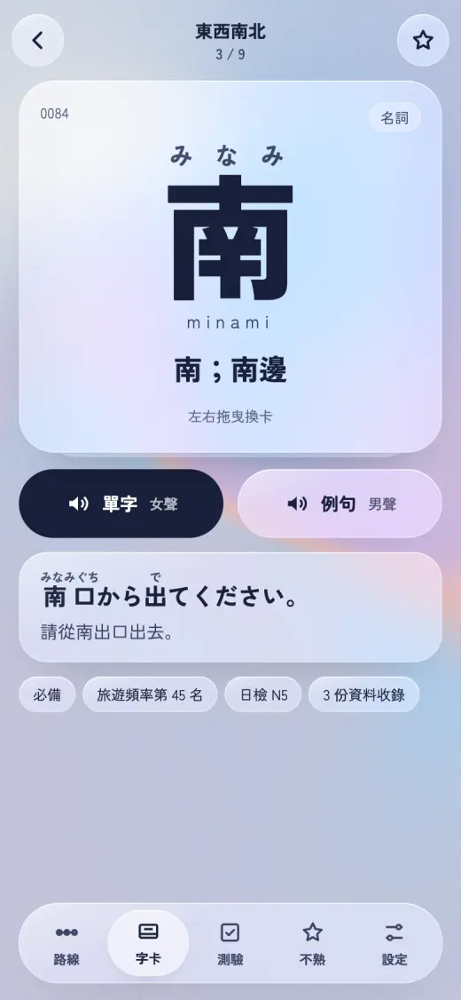
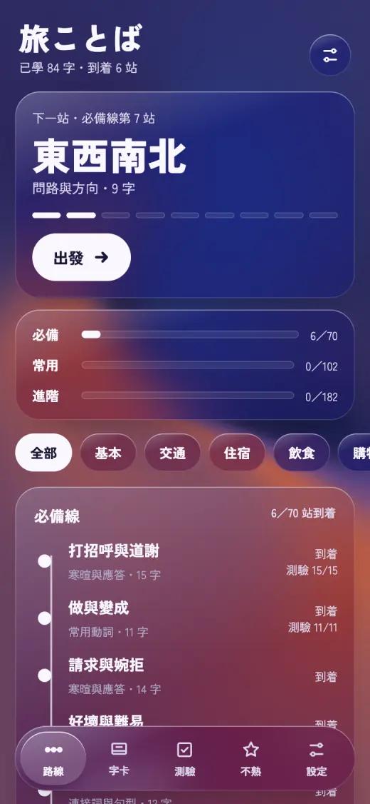
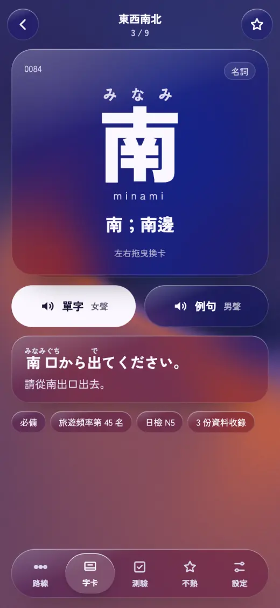
- 特色
- 下一站那格有一圈慢慢繞的流光邊框（kokonut 的做法）、三條線各自的進度條、浮動的玻璃分頁列（選到的分頁是一片玻璃鏡片，點別的會滑過去）。
- 深色
- 傍晚到入夜的天色（茜、藤、紺）。
- 動態
- 字卡拖曳＋彈簧；天空一直在流動。
- 風險
- 「玻璃＋漸層」是現在很常見的樣子，不像旅ことば獨有；背景一直動比較耗電，文字壓在漸層上的對比也要顧。
- 上線要做
- Paper Shaders 要放進 App（約 60 KB）；畫面不動時暫停天空。
現在的樣子對照
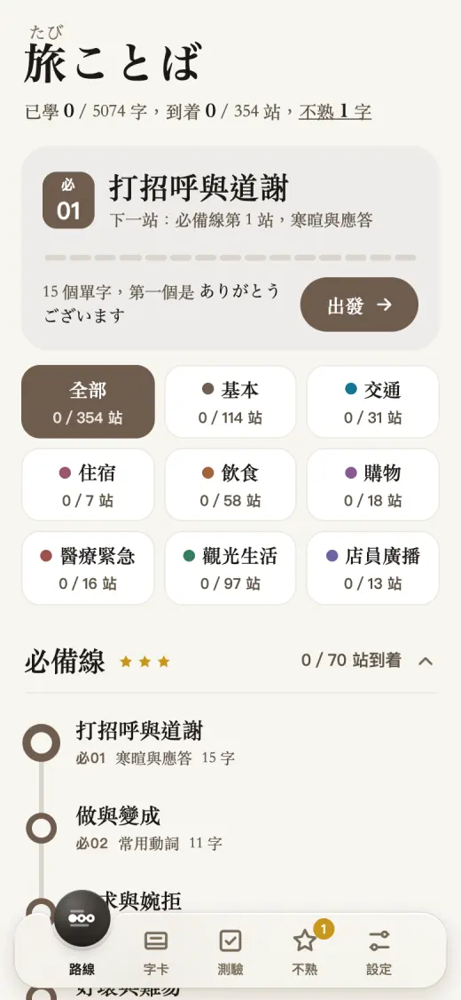
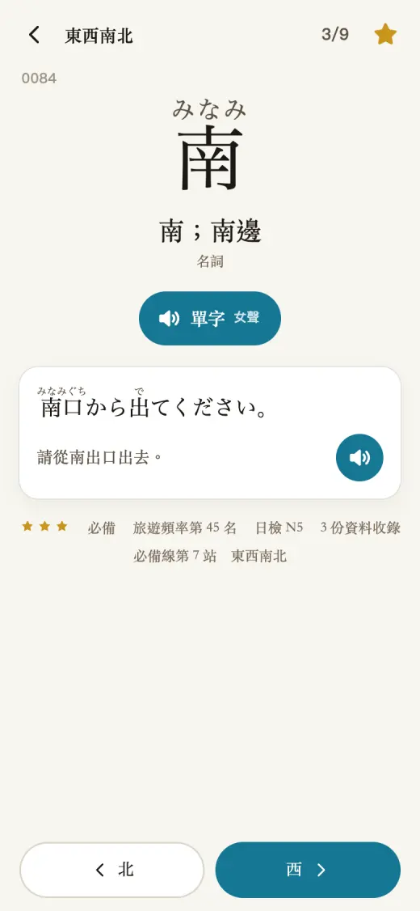
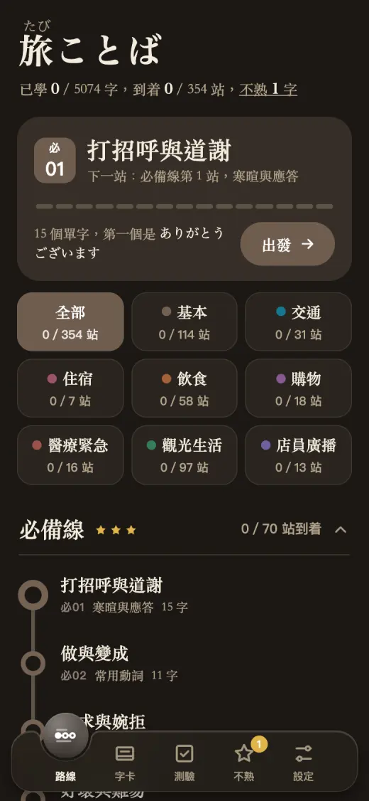
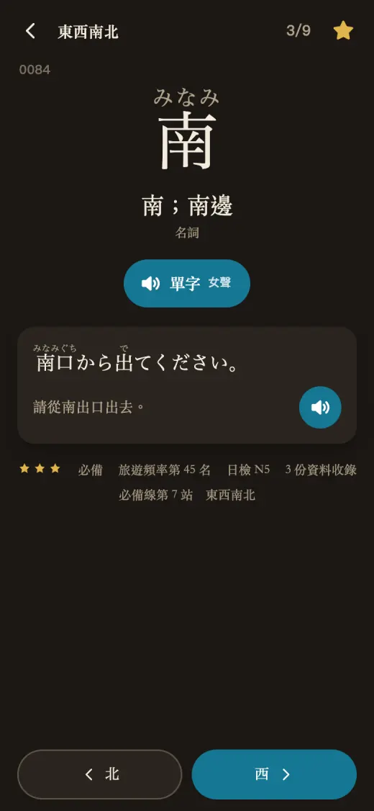
另外三張抽到但沒做的挑戰者：深藍琺瑯地鐵圖（併進 A：線只走直角與 45°、轉乘圓環、深藍琺瑯深色模式）、19 世紀辭典頁（併進 A：頂端顯示目前看到的站號範圍）、同人誌展場目錄與舞譜、資料藝術（跟旅遊單字無關，不採用）。